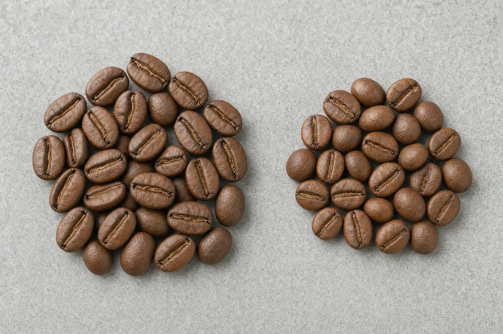
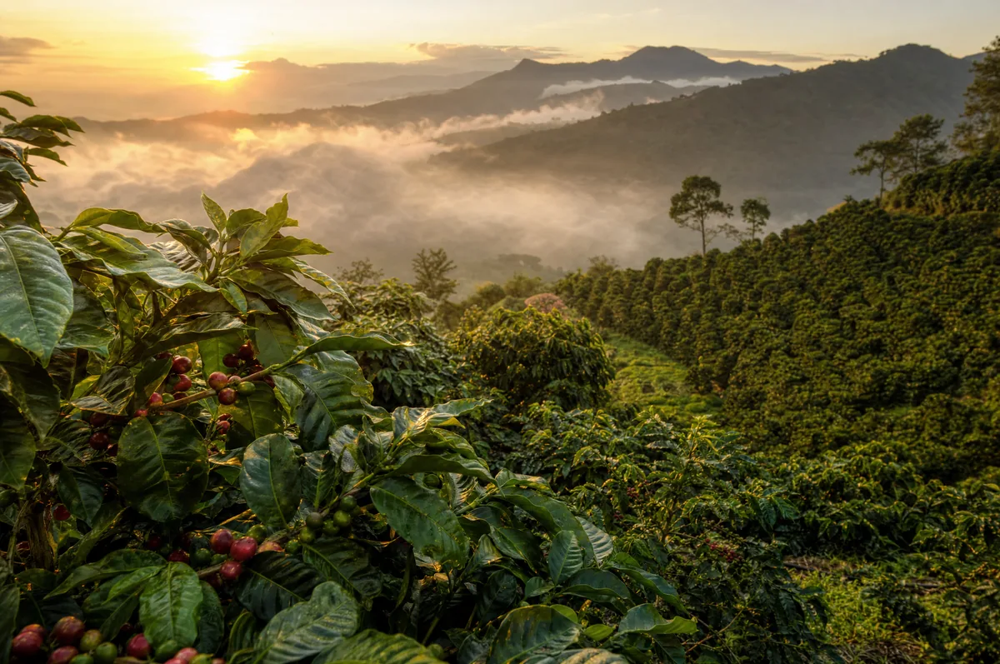
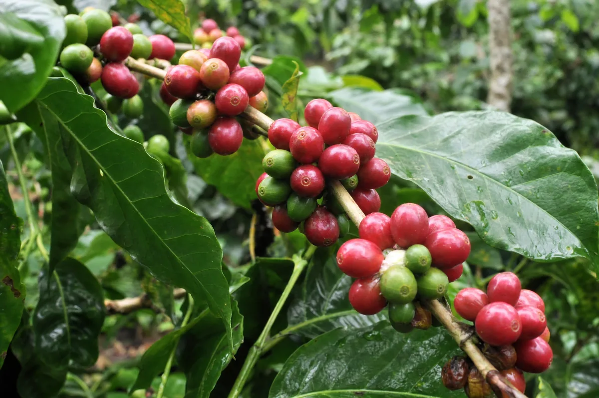
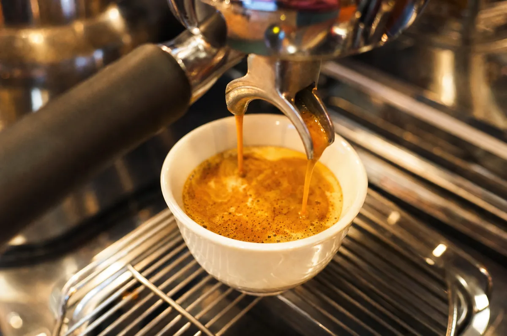

Inicio / Journal / Café arábica o robusta: diferencias, sabor, cafeína y cuál elegir
Origen y proceso
Café arábica o robusta: diferencias, sabor, cafeína y cuál elegir
El arábica y el robusta son las dos especies de café que se cultivan y se venden en el mundo. El arábica (Coffea arabica) es más dulce, aromático y ácido, y lleva menos cafeína, entre un 1,2 y un 1,5 %. El robusta (Coffea canephora) es más amargo, con más cuerpo y más crema, y lleva casi el doble de cafeína, entre un 2,2 y un 2,7 %. Alrededor del 60 % del café del mundo es arábica y el 40 % robusta. Y ojo: «100 % arábica» te dice la especie, no la calidad.

Es una de las dudas más habituales al comprar café: ¿qué pone en el paquete y qué significa de verdad? Esta guía te lo explica con cifras, sin mitos y con las fuentes al final.
Qué son el arábica y el robusta
Casi todo el café del mundo viene de dos especies de la misma familia:
- Arábica (Coffea arabica): nació en las montañas de Etiopía. Es la especie más cultivada y la que domina el café de especialidad.
- Robusta (Coffea canephora): procede de África central. Se cultiva en zonas más bajas y calurosas, sobre todo en Vietnam, Indonesia, Uganda, Brasil y Costa de Marfil.
Hay más especies de café, como el liberica, pero su peso en el mercado es muy pequeño.
Una curiosidad: el arábica tiene el doble de cromosomas que el robusta (44 frente a 22). Es una de las razones por las que son plantas tan distintas.
Arábica vs robusta: las diferencias, en una tabla
| Característica | Arábica | Robusta |
|---|---|---|
| Nombre científico | Coffea arabica | Coffea canephora |
| Sabor típico | Dulce, aromático y ácido; afrutado o floral | Amargo, terroso, a madera; mucho cuerpo |
| Cafeína (% del peso seco) | 1,2–1,5 % | 2,2–2,7 % |
| Grasas (lípidos) | 15–17 % | 10,5–11 % |
| Ácidos clorogénicos (amargor) | 5,5–8 % | 7–10 % |
| Altitud de cultivo | 600–2.200 m | 0–800 m |
| Temperatura ideal | 15–24 °C | 18–36 °C |
| Producción mundial | Alrededor del 60 % | Alrededor del 40 % |
| Precio | Más caro | Más barato |
| Crema en espresso | Menos abundante | Abundante y estable |
Las cifras son rangos típicos. Varían según el estudio, la variedad y el cultivo.
Sabor: por qué el arábica es más dulce y el robusta más amargo
El sabor es la diferencia que más se nota en la taza, y viene de la química del grano:
- El arábica tiene más azúcares y más grasas. Crece en altura, donde el fruto madura despacio y concentra azúcares y aromas. En la taza eso da dulzor, acidez agradable y notas de frutas, flores o chocolate.
- El robusta tiene más ácidos clorogénicos. Estos compuestos, al tostarse, dan amargor y un carácter terroso o de madera. Tiene menos azúcar y menos grasa, así que también es menos dulce.
Por eso, para café de filtro, V60 o cualquier método en el que quieras notar los matices del origen, se usa arábica. El robusta se nota mucho más por el cuerpo y el amargor.
Cafeína: el robusta lleva casi el doble
El robusta lleva entre un 2,2 y un 2,7 % de cafeína sobre peso seco; el arábica, entre un 1,2 y un 1,5 %. La cafeína es un insecticida natural: por eso el robusta, que crece en zonas más cálidas y con más plagas, tiene más.
Dos matices importantes:
- La cafeína de tu taza no depende solo de la especie. También cuenta cuánto café usas, cuánto tiempo y cómo lo preparas.
- Más cafeína no significa más calidad. Un café con robusta tiene más cafeína, pero también más amargor.
Cultivo y precio: por qué el robusta es más barato
El robusta es una planta más resistente: soporta mejor el calor, la humedad y las plagas, crece a menos altitud y produce más por hectárea. Todo eso abarata el café.
El arábica es más delicado. Necesita clima fresco, altura y más cuidados, y rinde menos. Por eso es más caro y se cultiva sobre todo en países de montaña como Colombia, Etiopía, Guatemala o Costa Rica.


¿Cuál es mejor, arábica o robusta?
Depende de lo que busques:
- Quieres notar el origen y los matices (afrutado, floral, chocolate): elige 100 % arábica de tueste natural. Es lo que usa el café de especialidad.
- Quieres un espresso con cuerpo y mucha crema: una mezcla con un poco de robusta funciona. Muchas mezclas italianas clásicas la usan para dar crema y cuerpo.
- Quieres más cafeína: el robusta o una mezcla con robusta la tiene. Recuerda que también amarga más.
- Quieres menos amargor: arábica, de tueste natural y bien preparado.
Y una nota para ser justos: el robusta no es «malo» por naturaleza. La mayor parte del robusta del mercado es de calidad comercial, y eso le ha dado mala fama. Existen robustas finos, bien cultivados y procesados, y hay programas para evaluarlos, como el Q Robusta del CQI. Son una parte muy pequeña del mercado.

«100 % arábica»: qué significa y qué no
«100 % arábica» significa que todo el café del paquete es de la especie arábica. Nada más.
- No garantiza calidad. Un arábica de baja calidad, mal tostado o viejo puede ser peor que un buen robusta.
- No garantiza que sea de especialidad. El café de especialidad es arábica, pero no todo el arábica es de especialidad.
- No garantiza tueste natural. Un café 100 % arábica puede ser torrefacto (con azúcar). Lo explicamos en la guía del café torrefacto.
Para saber de verdad qué compras, mira estos datos en la etiqueta: el origen (país y región), la altitud, el proceso, el tueste (natural), la fecha de tueste y, si hay, las notas de cata.
Arábica, robusta y España
En España conviven tres mundos: el café tradicional de bar y supermercado, que históricamente ha usado mucho robusta y torrefacto; el café arábica de calidad; y el café de especialidad, en crecimiento. Si estás acostumbrado al café de bar y pruebas un arábica de tueste natural, notarás menos amargor, más dulzor y más acidez. Es normal que al principio te parezca distinto.
Cómo notar la diferencia en casa
La mejor forma de entenderlo es probarlo. Una cata sencilla:
- Elige dos cafés: uno 100 % arábica de tueste natural y otro con robusta (por ejemplo, una mezcla 80/20).
- Prepáralos igual: mismo método, misma cantidad de café y de agua, misma temperatura.
- Prueba primero el aroma: el arábica suele oler más afrutado o floral; la mezcla, a frutos secos o cacao.
- Bébelos tibios, no solo calientes. Al enfriarse se notan mejor el dulzor y el amargor.
- Anota tres cosas: dulzor, amargor y cuerpo. Verás dónde se separan.
Preguntas
Preguntas frecuentes
¿Otra duda? Escríbenos →01¿Qué es mejor, arábica o robusta?
Depende de lo que busques. El arábica es más dulce, aromático y complejo, y es la base del café de especialidad. El robusta aporta cuerpo, crema y cafeína, y se usa en muchas mezclas de espresso.
02¿Qué lleva más cafeína, el arábica o el robusta?
El robusta: entre un 2,2 y un 2,7 % de cafeína sobre peso seco, frente al 1,2 a 1,5 % del arábica. Es casi el doble.
03¿Qué es el café robusta?
Es la segunda especie de café más cultivada, Coffea canephora. Se da en zonas más bajas y calurosas, resiste mejor las plagas, es más barato y su sabor es más amargo y terroso, con mucho cuerpo.
04¿Por qué amarga más el café robusta?
Porque tiene más ácidos clorogénicos, que al tostarse dan amargor, y menos azúcares y grasas que el arábica, que son los que aportan dulzor.
05¿«100 % arábica» significa que es café de especialidad?
No. Significa que todo el café es de la especie arábica. El café de especialidad es arábica, pero no todo el arábica es de especialidad: importan el origen, el proceso, la puntuación de cata y la frescura.
06¿Por qué el robusta es más barato?
Porque la planta es más resistente, crece a menos altitud y produce más por hectárea. Tiene menos costes de cultivo que el arábica.
07¿Se pueden mezclar arábica y robusta?
Sí. Es muy habitual en el café de espresso: una parte de robusta (por ejemplo, un 20 %) aporta cuerpo, crema y cafeína, y el arábica aporta dulzor y aroma.
08¿Qué café es mejor para espresso?
Para un espresso con más cuerpo y crema funciona bien una mezcla con algo de robusta. Si buscas dulzor y matices de origen, un espresso 100 % arábica de tueste natural. Es cuestión de gusto.
Fuentes
- Compound Interest (Andy Brunning), «Coffee Chemistry: Arabica vs. Robusta» (2023): https://www.compoundchem.com/wp-content/uploads/2023/10/Coffee-arabica-vs-robusta-2023.pdf
- Organización Internacional del Café (OIC / ICO), estadísticas de producción por especie: https://ico.org/
- Lavazza, «Arabica and Robusta: meaning, vocabulary and curiosities» (origen, cafeína, crema): https://www.lavazzausa.com/en/coffee-secrets/arabica-robusta-meaning-vocabulary-curiosities
- Perfect Daily Grind, «El mercado español del café de especialidad» (2026): https://perfectdailygrind.com/es/2026/02/14/mercado-espanol-del-cafe-de-especialidad/
Última actualización: 2 de noviembre de 2026. Las cifras son rangos típicos y pueden variar según la fuente, la variedad y el cultivo.